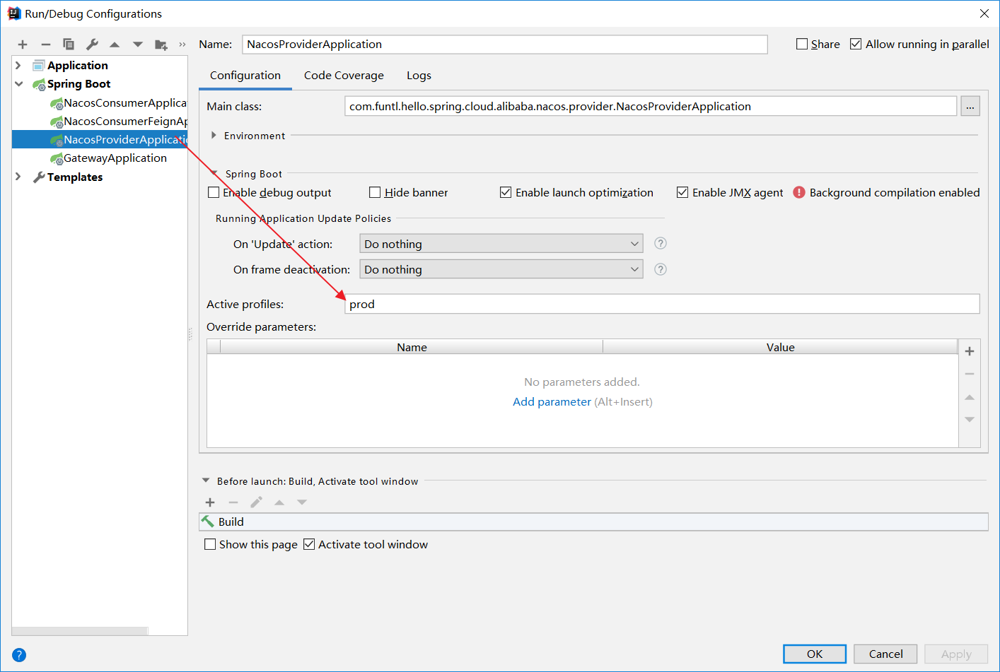

Nacos Config 服务端初始化
分布式配置中心
在分布式系统中，由于服务数量巨多，为了方便服务配置文件统一管理，实时更新，所以需要分布式配置中心组件。之前我们写配置文件，改完就要重启服务，要是有100个服务呢？
Nacos Config
Nacos 提供用于存储配置和其他元数据的 key/value 存储，为分布式系统中的外部化配置提供服务器端和客户端支持。使用 Spring Cloud Alibaba Nacos Config，您可以在 Nacos Server 集中管理你 Spring Cloud 应用的外部属性配置。
Spring Cloud Alibaba Nacos Config 是 Spring Cloud Config Server 和 Client 的替代方案，客户端和服务器上的概念与 Spring Environment 和 PropertySource 有着一致的抽象，在特殊的 bootstrap 阶段，配置被加载到 Spring 环境中。当应用程序通过部署管道从开发到测试再到生产时，您可以管理这些环境之间的配置，并确保应用程序具有迁移时需要运行的所有内容。
配置文件优先级：
bootstrap.properties—>bootstrap.yml—>application.properties—>application.yml
创建配置文件
需要在 Nacos Server 中创建配置文件，我们依然采用 YAML 的方式部署配置文件，操作流程如下：
- 浏览器打开 http://localhost:8848/nacos ，访问 Nacos Server

- 新建配置文件，此处我们以之前创建的 服务提供者Spring Cloud Alibaba 微服务框架入门 项目为例：

注意：Data ID 的默认扩展名为 .properties ，希望使用 YAML 配置，此处必须指明是 .yaml
- 发布成功后在 “配置列表” 一栏即可看到刚才创建的配置项

Nacos Config 客户端的使用
POM
此处我们以之前创建的服务提供者Spring Cloud Alibaba 微服务框架入门项目为例：
在 pom.xml 中增加 org.springframework.cloud:spring-cloud-starter-alibaba-nacos-config 依赖
1 | <dependency> |
完整的文件：
1 |
|
bootstrap.properties
创建名为 bootstrap.properties 的配置文件并删除之前创建的 application.yml 配置文件，由于已经在服务端配置，此处不再赘述：
1 | # 这里的应用名对应 Nacos Config 中的 Data ID，实际应用名称以配置中心的配置为准 |
注意：在之前的 Spring Cloud Netflix 课程中有提到过 Spring Boot 配置文件的加载顺序，依次为 bootstrap.properties -> bootstrap.yml -> application.properties -> application.yml ，其中 bootstrap.properties 配置为最高优先级
启动应用程序
启动应用后我们可以通过日志看到，已经成功加载到了配置文件：
配置的动态更新
Nacos Config 也支持配置的动态更新，操作流程如下：
- 修改服务端配置，增加一个
user.name的属性
- 修改 Controller ，增加一个请求方法，测试配置更新效果
1 | package org.lee.spring.cloud.alibaba.nacos.provider.controller; |
- 通过浏览器访问该接口:localhost:8081/hi，浏览器显示：
1 | Hello kobe |
- 修改服务端配置：
- 刷新浏览器，浏览器显示
1 | Hello kobeAndGiGi |
注意：你可以使用 spring.cloud.nacos.config.refresh.enabled=false 来关闭动态刷新
Nacos Config 多环境的配置
Spring Boot Profile
我们在做项目开发的时候，生产环境和测试环境的一些配置可能会不一样，有时候一些功能也可能会不一样，所以我们可能会在上线的时候手工修改这些配置信息。但是 Spring 中为我们提供了 Profile 这个功能。我们只需要在启动的时候添加一个虚拟机参数，激活自己环境所要用的 Profile 就可以了。
操作起来很简单，只需要为不同的环境编写专门的配置文件，如：application-dev.yml、application-prod.yml， 启动项目时只需要增加一个命令参数 --spring.profiles.active=环境配置 即可，启动命令如下：
1 | java -jar spring-cloud-alibaba-nacos-provider-1.0-SNAPSHOT.jar --spring.profiles.active=prod |
Nacos Config Profile
spring-cloud-starter-alibaba-nacos-config 在加载配置的时候，不仅仅加载了以 dataid 为 ${spring.application.name}.${file-extension:properties} 为前缀的基础配置，还加载了 dataid 为 ${spring.application.name}-${profile}.${file-extension:properties} 的基础配置。在日常开发中如果遇到多套环境下的不同配置，可以通过 Spring 提供的 ${spring.profiles.active} 这个配置项来配置。
此处我们以之前创建的服务提供者项目为例：
在 Nacos Server 中增加配置
增加一个名为 nacos-provider-config-prod.yaml 的配置：

注意：此时，我将配置文件中的端口由 8081 -> 8082
在项目中增加配置
增加一个名为 bootstrap-prod.properties 的配置文件，内容如下：
1 | =prod |
主要增加了 spring.profiles.active=prod 配置，用于指定访问 Nacos Server 中的 nacos-provider-config-prod.yaml 配置
启动应用程序
此时我们有两个配置文件，分别为 bootstrap.properties 和 bootstrap-prod.properties ，我们需要指定启动时加载哪一个配置文件，操作流程如下：

- 设置需要激活的配置

- 观察日志，判断是否成功加载配置